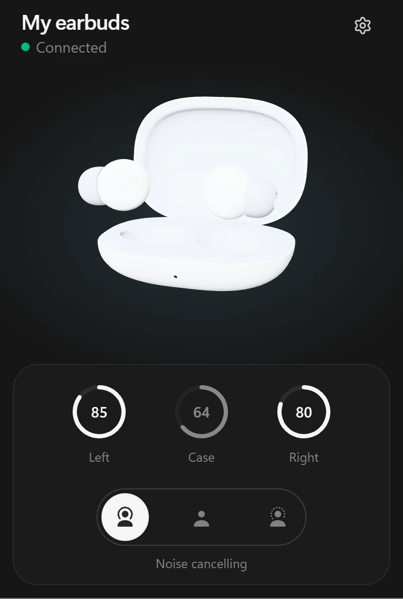
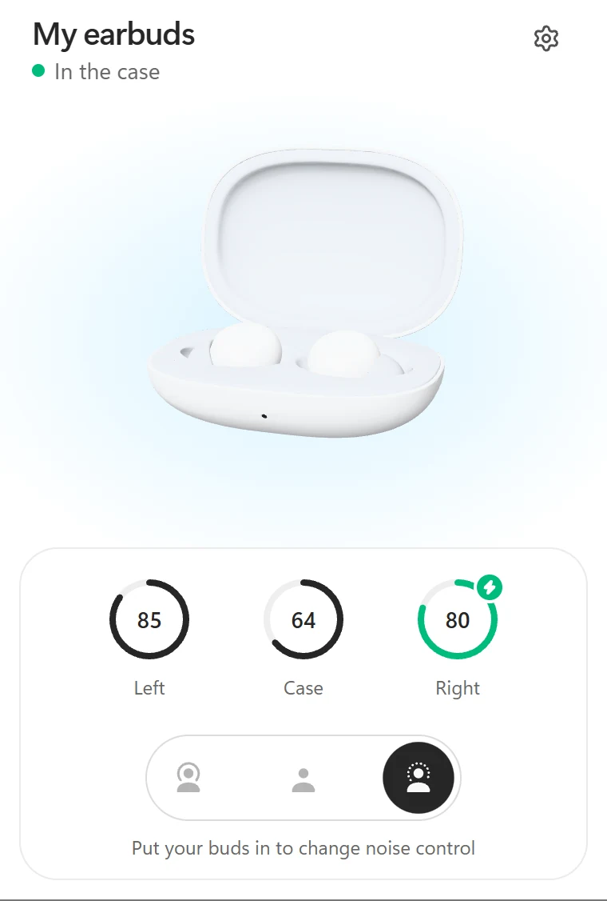
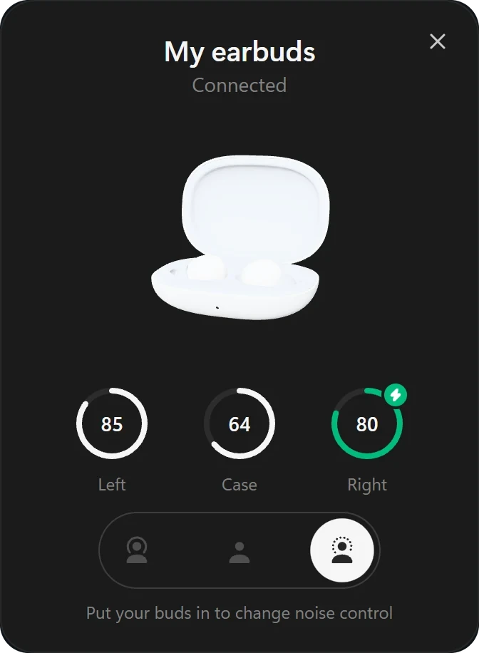

Battery you can trust
Left, right and case, live. When a bud goes quiet for a moment, you keep its last level instead of a scary zero.
Free and open source · Windows 10 and 11
Battery for each bud and the case, noise control, press-and-hold and more, in a small app that waits in your tray and says hello when your buds connect.
Under 3 MB · no account · updates itself



What it does
Left, right and case, live. When a bud goes quiet for a moment, you keep its last level instead of a scary zero.
Noise cancelling, transparency or off, from the app, the tray or a shortcut.
Switch modes from any app. Change or turn off every shortcut, and see if another app already uses one.
A small card slides up when your buds connect. It stays out of the way of games and films.
Starts with Windows if you like, and stays out of sight until you need it.
Take a bud out and it lifts out of the case on screen. Put it back and it settles in.
Press-and-hold for each bud, ear detection, noise control with one bud, and renaming.
Built to be trusted
FitsWise only talks to your buds while Windows is already using them. It never pulls them away from your phone.
No account, no analytics. The only time it goes online is to check GitHub for a new version, which you can turn off.
Updates are checked against a signature built into the app, so a tampered download is refused.
Every line is on GitHub under the MIT licence. Read it, build it yourself, or help make it better.
Beats Fit Pro. Other Beats get a clear "not supported yet" message, and FitsWise sends them nothing. Support for more models is welcome on GitHub.
That SmartScreen warning appears for new apps without a paid code-signing certificate. Choose More info, then Run anyway. The source and every release are public, and updates are signed.
No. Pair your buds in Windows Bluetooth settings and open FitsWise. It uses the same connection Windows already has.
Your buds turn it off when their sensors can't feel your ears. FitsWise tells you when that happens. Reseat the buds or wipe the sensors.
No. It's an independent project and isn't affiliated with, endorsed by or sponsored by Apple or Beats.